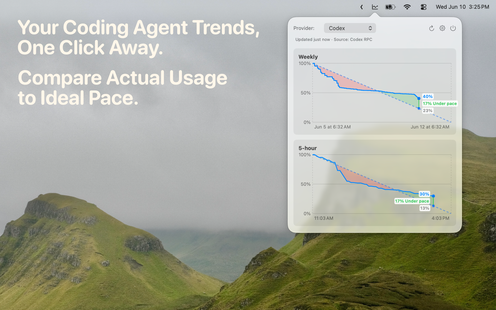

Most usage tracking answers the easiest question: how much have you used? That matters, but it is not the question developers usually have while working. The harder question is whether the current pace is safe. If you are three hours into a long session, a raw percentage does not tell you whether you can keep going normally, slow down, or save quota for later.
AgentPace is built around that pacing problem. It treats Claude Code usage as a budget over time, then shows actual usage against the budget line you would ideally follow until the reset. If actual usage is drifting ahead of the line, you know the current burn rate is aggressive. If it is behind, you have more room to keep working.

The problem is pacing, not just counting
A Claude Code usage limit is easy to hit at the wrong time because coding work is uneven. You might have a quiet morning, then spend the afternoon iterating on a hard bug with an agent in the loop. A counter can show that usage is increasing, but it does not explain whether that increase is reasonable for the remaining window.
That is why AgentPace focuses on a pace graph. The ideal line gives you a reference for the whole window. It makes the quota feel less like a mystery number and more like a visible budget. You can still make your own decision about how much to use, but the decision is based on context instead of guesswork.
This is especially helpful when Claude Code is part of normal development rather than an occasional tool. If you check usage only after a session feels heavy, you are already reacting. A pace meter lets you notice the pattern earlier, while there is still time to adjust.
Actual usage versus ideal pace
The core AgentPace view compares your real usage with the line you would follow if usage were spread evenly across the active window. That comparison is intentionally simple. When the actual line runs ahead of the ideal line, you are spending faster than the window can comfortably support. When it stays near or below the line, your usage is closer to plan.
This is more useful than a standalone Claude Code usage meter because it turns a number into a state. You can glance at the menu bar popover and understand whether your current session is likely to create a problem before reset. The goal is not to nag you. The goal is to show enough signal that you can keep moving without opening dashboards or doing mental math.
Forecasting when you might run out early
AgentPace is also useful when your usage pattern changes during the window. If a session starts consuming usage quickly, the chart makes that drift visible. You can decide to keep going because the task is worth it, switch to a lighter workflow, or leave more room for later. The app does not need to be a planner or analytics suite. It just needs to make the risk visible before the limit interrupts your work.
A menu bar workflow for Claude Code
AgentPace lives in the macOS menu bar because usage pacing should be nearby but not prominent. You should not need to open a separate reporting product just to understand whether you are on track. The popover is meant for quick checks: open it, read the chart, get back to the editor.
The app is also local-first. AgentPace has no account system, cloud dashboard, ads, analytics, or telemetry. Usage history and refresh errors stay on your Mac. That matters because coding-agent usage can reveal work rhythms, project intensity, and the shape of a development day.
Check your Claude Code pace from the menu bar.
Download AgentPace and see whether your Claude Code usage is ahead of or behind pace.
Download AgentPace